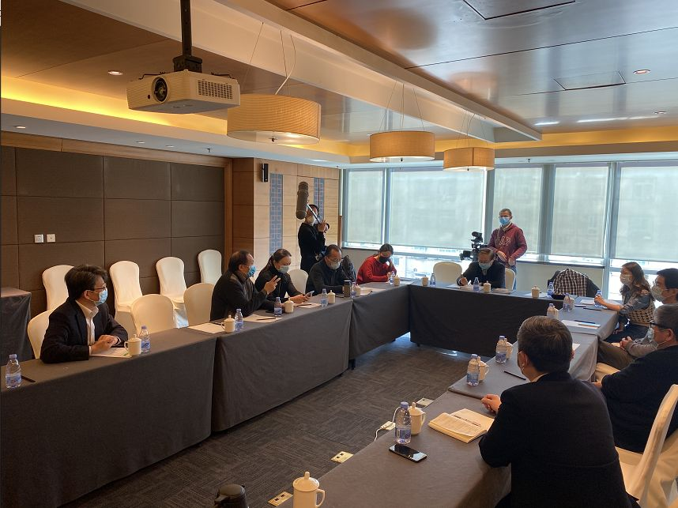

对抗疫情，特效药和疫苗不是唯一武器
原文链接 备份链接 疫情危机再一次提醒我们，在公共卫生方面，从政府、社会到公众，我们还有很多功课未能完成。 作者 | 朱纪明 程峰（清华大学医学院公共健康研究中心） 编辑 | 徐菁菁 药物和疫苗不一定“特效” 身在疫情中，大众的期待是特效 …

“疾控要像消防一样，在疫情处置中有决定权、处置权”
从大年初六（1月30日）开始，中国疾控中心首任主任、北大公共卫生学院教授李立明再次“出山”，带领一批国内公共卫生领域的骨干们集中办公。他率领的这个团队的名字叫“中华预防医学会新型冠状病毒感染肺炎防控专家组”，工作内容主要包括研判整个疫情防控运行的情况，提供防控技术的支撑，并作舆情监测。
2月16日，就在新冠肺炎疫情防控的关键时期，专家组主要成员集中接受了《中国新闻周刊》的采访。受访专家除李立明外，还包括：江苏省预防医学会会长、原江苏省疾控中心主任、省卫生厅副厅长汪华；复旦大学公共卫生学院原院长、流行病学教授、原澳门政府卫生局顾问姜庆五；广州市妇女儿童医疗中心临床研究总监、香港中文大学流行病学荣休教授唐金陵；中山大学公共卫生学院院长、医学统计与流行病学系教授郝元涛；南京医科大学研究生院院长、公共卫生学院生物统计学教授陈峰；安徽省疾控中心原主任任军等。

2月16日，中国疾控中心首任主任李立明率中华预防医学会新型冠状病毒感染肺炎防控专家组在北京接受《中国新闻周刊》专访。
“这个监测系统并不负责发现新发传染病”
《中国新闻周刊》：中国的疾控系统在SARS之后就建立了一个直报系统来进行传染病监测，但在这次疫情早期，这一防线好像并没有及时发挥作用，这可能是在监测的哪些环节出了问题？
汪华：在SARS前，我们国家就开始建立一个敏感的、在全国能上下联动的疫情报告系统，SARS以后就加快了这个系统的建设。这个系统是由医疗机构和卫生机构集成的，甲类、乙类传染病，确诊以后在网上直接报告，丙类传染病只监测不报告。
根据《传染病防治法》，只有国家卫生行政部门以及它委托的省级卫生行政机构才有权公布疫情，国家疾控中心与地方各级疾控中心都是没有任何权力对外公布疫情的。
此外，一个重要问题是，新发传染病不在报告范围里面，也就是说，这个监测系统并不负责发现新发传染病。
《中国新闻周刊》：那么新发传染病如何监测和报告？
汪华：对于公共卫生疑似突发事件，有另外一个报告系统。这个系统规定了报告的数量、范围、时间，它是一个疑似病例，因此不对外公布，要通过专家评估、核实、诊断，最后确定是不是构成突发公共卫生事件，这里就需要一定时间的过程。所以这就暴露了我们在制度与规范设计上存在的问题。
李立明：在《传染病防治法》里，对这些新发传染病只有一句话，就是说要报告，但是对于怎么报告，没有明确的规定。所以在1月20日左右，国家规定新冠病毒肺炎为“乙类传染病，按甲类管理”，其后每天就开始报告了。在这之前，没有定性它是一个什么病、危害性如何，需要有一个专家评估与卫生行政部门决策的过程。
姜庆五：全世界恐怕也难以找到中国的这么一个强大的疫情直报系统，它对已知传染病的管理，还是发挥了很大作用，它的缺点是，没有覆盖新发传染病。
对于怎么改进它，我的建议是，对于一个新发传染病，要加强“症状监测”，而不是“疾病监测”。因为一开始，一个新的疾病出现，谁也不知道它是什么病，但往往它的表现不外乎发热、咳嗽、腹泻、呕吐、肌肉酸痛等，这些都是很敏感的证据，需要把这些症状检测起来。
李立明：此次新冠疫情爆发的这个时间，正好是我们的流感、肺炎或过去所谓的非典型性肺炎季，也是很多呼吸道传染病高发的季节。因此，在短期内要发现一个呼吸道传染病是一个新发疾病，还是需要一定时间和检测来确定的。我们最近准备给政府提议，对于呼吸道传染病，能够有一个专门的、敏感的监测系统，凡是有相关症状的，全部上报，再从里面筛选出哪些是新发传染病、哪些是已有传染病。
汪华：目前，发热门诊、不明原因肺炎的监测系统以及流感监测系统，都分散在医疗机构的管理单项里。在就诊过程中，发现不明原因肺炎病人，按要求本应立即报告，但实际操作中没人管。临床医生都很忙，上报就意味着后续有一系列登记填表、调查的工作要做，这对于他们来说，是额外的负担。所以专家们早就提出来，要在机制上打通诊断、报告、治疗和疫情控制。具体来说，比如，能否在医院的电子诊疗系统做一个改进，当医生接诊一个不明原因肺炎病人，不需要再另填表，只需在他的系统里点击按钮，这个病例就能发送到监测系统里去。
“第一时间需要流行病学家”
《中国新闻周刊》：疫情初期，新冠肺炎的确诊标准包含了必须要有华南海鲜市场接触史、发热等条件，但并不是每个病人都能同时满足这些条件。这就造成一个问题，医院收了很多疑似病人，但因不符合确诊条件，不能上报。这反映出什么问题？
李立明：新发传染病有一个很大的特点，就是一定要考虑它的流行病学史，感染者有没有暴露在一个特定环境下，比如说，海鲜市场的野生动物销售环境。确定了海鲜市场的流行病学特征以后，凡是和这个环境接触的，马上可以做出诊断，但并非所有从海鲜市场出来的都感染，反之亦然。这就出现了一个诊断上的敏感性问题。一般来说，面对一个新发传染病，为了发现和控制传染源，“宁可错杀一千，也不漏掉一个”，是应对的原则。所以，应该强调的是，诊断方法的灵敏度要高一些，临床诊断标准可能应该宽一点，以保证不漏掉任何一个可疑的传染源。
《中国新闻周刊》：最早确定诊断标准的时候，有没有流行病学专家？
姜庆五：从结果来看，当时，病原学以外的事情没有刻画出来。在12月31日国家卫健委第一批专家组去武汉后，没有看到有流行病学或公共卫生学专家出来发声。一个新疾病的出现，当然要让科学家来研究，而且当时也有很多混在一起的相似传染病，找出病原非常重要。但是，我们也体会到了最初的调查中，流行病学调查的跟进不足，比如，只看到华南海鲜市场，但是，当时有一部分病人并非从海鲜市场获得感染。光看了几个病人，刻画不出这个疾病背后真正的传播规律，病人是从什么地方来的、感染源是什么地方、传染途径又是什么等等。
李立明：其实，新发传染病的应对要做的就三件事：控制传染源、切断传播途径和保护易感人群。所以，一个新发传染病从一开始就要着手关注这三件事。疾控专家就是要寻找新发传染病的流行病学规律，找出它可疑的传染源、疾病的潜伏期、疾病特征和发病规律等，以便及时采取防控措施；临床大夫主要关注临床症状、体征、诊断标准、治疗和它的预后等，以提高治愈率和减少病死率；基础研究专家关注病原及其特征，发现病毒的全基因测序及结构特征后，就可以研制诊断试剂、疫苗和治疗的药物。这三项工作相互配合，缺一不可。
但是，在新发传染病早期暴发或流行时，在我们不知道病原为何物时，一个传染病同样可以有效的预防和控制，这是我们公众要建立的一个概念，不是说非得找到病原，才能控制疫情。同时，对于临床大夫的早期诊断和各种新发传染病的临床鉴别能力的培训，以及传染病防护技能的培训，其实也是非常重要的。
《中国新闻周刊》：也就是说，即使病原不清楚，事实上也是可以启动预防措施。但中国的现实情况是，临床医生更为强势，那么流行病学家能在何时、以何种方式介入？
李立明：举一个例子，美国在每个医院的急诊科里面都配有CDC的专家，他们就是要在急诊室随时发现新的异常病例，建立起一种敏感度很高的传染病疫情监测系统。疾控专家与临床医生一起工作，这就叫医防结合。而我们现在都是，临床大夫在一线往上报各种可疑的临床病例，然后流行病学的或疾控专家再去调查，这样做是不同步的，不利于及早发现新发传染病患者及可能的传染源。
“拐点并不是黎明前的黑暗，只是相当于夜里12点”
《中国新闻周刊》：现在大家都在说拐点，那么拐点真的已经到来了吗？
陈峰：首先我们要厘清一下拐点的含义。拐点实际上是新增发病率或发病人数最高的那一天，而且应该是按发病时间来计算，并非是往上报告的病例，因为上报的都是确诊病例数，往往滞后，因而我们看到的拐点，实际上是比实际情况滞后的。
疾病本身有它的发展规律，如果不控制的话，它就呈指数级增长。R0（基本传染数），是指一个人整个传染期里面能够感染多少人。如果R0是2的话，那就已经很高了，防控就是要把这个R0指数给它降下来。所以，拐点实际上就是防控真正起作用的时候，也就是R0小于1的时候，这是我们从流行病学的角度来定义的拐点。
郝元涛：通过前期的一些数据分析，我们发现其实新发病例数的高峰时间，大概在1月26～29日这个时间范围内，之后新发病例数就开始缓慢下降。这个跟公众每天看到的确诊病例数的高峰，刚好有一个错峰，因为发病了不一定马上确诊，这个时间差刚好也跟从发病到确诊的时间间隔比较一致。
姜庆五：从分析结果发现，现在看到的高峰，是封城以后带来的效应，如果不采取封城，拐点可能还不会到，现在可能还是另外一种局面。拐点和封城的时间，从流行病学上来说是吻合的。
唐金陵：为什么说跟封城是吻合的？因为封城是1月23日，潜伏期平均是6天，也就是说，如果封城有效，那么到了1月29日以后，新发病例数就应该下滑。但是大家看到卫健委报的数，大概平均又晚5天左右，因此从封城到开始下降，应该在10天到12天左右。果不其然，公开的数据就是在2月5日开始降的。
我们刚才所说的拐点是发病高峰，也就是1月26日～29日，但拐点并不是黎明前的黑暗，只是相当于夜里12点，我们还有很长的路要走。这个时候恰恰是临床上最艰难的时候。因为这个病的治愈时间很长，就像蓄水池一样，进来的水很多，出去的很慢，造成了累计病例数很多的现象。
“很多地方卫健委一把手、二把手没有医学背景，也没有公共卫生背景”
《中国新闻周刊》：长期以来，公卫界是不是在话语权上比较弱势？
李立明：平时突发应急的准备，疾控系统天天都在做，但是没有得到足够的认识和重视。往往是疫情来了，疾控机构和队伍就被重视了，而疫情一走，这支队伍就不被重视了，甚至被边缘化了。我们常调侃说，预防医学、公共卫生实际上是一个“自毁长城”的队伍，你的防病工作做得越好，就越得不到社会和政府部门的重视。这种状况必须改变！
郝元涛：怎样培养一支优秀的公共卫生与预防医学队伍，是大家很关注的，但是现在的形势确实很严峻。从入口来说，现在第一志愿报考预防医学专业的同学，就算在我们这些优秀的公共卫生学院里，所占比例大概也就不超过30%～40%，有不少都是通过调剂过来的。我觉得至少有两个原因，一是国家对公卫机构的重视不够，它的地位不高；二是大家对公卫的重要性认识不清楚。
从出口来说，传统上，很多优秀的毕业生都到疾控中心去工作，但现在优秀毕业生不选择去疾控中心，而是情愿到医院工作在医院里做院内感染工作、科研工作，或者去一些相关的辅助科室，因为相比较医院来说，疾控的待遇差，而医院的待遇好很多。
其实这都值得我们深思，而且要想到办法解决这个问题。否则将来大楼有了、机制建立起来了，但是没有一支优秀的疾控队伍，还是很难做好这件事情的。
陈峰：临床医学专业、口腔医学，都有专业博士学位的授权点，只有公共卫生没有专业博士。我们几个学校已经申请了很多年，但一直没有批下来。公共卫生专业最高的学位就是硕士。这一点也体现了教育、行政各方面的不重视。
《中国新闻周刊》：在美国的教育体系中，公共卫生硕士（MPH）是最高学位吗？
李立明：美国还有公共卫生博士学位。此外，美国所有的州卫生局局长一般都是医学博士（MD）加公共卫生硕士（MPH），这是卫生管理最佳的学历背景。据我了解，美国医学院校里的医学博士（MD）中约有四分之一拥有MPH学位，体现了对公共卫生专业的重视和在美国卫生保健系统中的地位和作用，公共卫生专业其实是一个比较普及的职业教育。
姜庆五：这次疫情里，现场处理了好多干部。其实在很多地方，卫健委的一把手、二把手都没有医学背景，也没有公共卫生教育背景，这是我很吃惊的，因为这是一个需要强有力的专业知识支撑的岗位。湖北疫情早期的各种问题，都与这种“不是专业的人却在做专业的事”的现象有一定关系。
郝元涛：最早接触病人的是临床医生，但医生不仅仅要有个体防治的知识技能，应该还要有一个更高层面的群体防控的理念。这就需要对医生有毕业后的继续教育，特别是关于公共卫生的教育。
“疾控要像消防一样，在疫情处置中有决定权、处置权”
《中国新闻周刊》：现在有一种普遍的探讨，比如说把中国疾控中心（CDC）和美国的相比，发现后者有很强的决策权。现行体制对于疾控工作来说，会带来怎样的影响？
汪华：这跟中国卫生健康的指导思想有关系、和体制有关系。当然不能简单跟美国CDC比，这是两个本质不同的系统。我当疾控中心主任这么多年，也到行政部门工作了很多年，极力在为疾控机构呐喊，但我们只能在国家的大框架下做力所能及的事情。
疾控中心是一类公益事业单位，它的定位就是一个技术指导部门。所以包括国家CDC主任在内，哪有权力来公布疫情相关的东西？不可能的。
体制上怎么改进，我们的想法就是，一定要给它行政权力。就像消防一样，在疫情的处置中，有自己的决定权、处置权。
李立明：不可能在高楼救火的时候，我开着车到那一看，先请示上级说我们有什么方案，等上级批了我们再去救火吧？！
汪华：现在大家都在怪CDC，实际上它没有任何权力。我们开玩笑说，还不如回到原来防疫站的体制，那时候监督和监测职能放在一起。现在行政管理权没有了，什么事情都要看同级的卫生行政部门怎么决策。就好像疫苗一出事，要追责即先把疾控中心主任撤掉，这是毫无道理的。
任军：预防为主的理念要长期坚持下去，不能因为一场传染病疫情处理好了，就放松了。事实上，2003年以后，国家对各层级疾控体系的建设是非常重视的，房屋的建造、人才的培养，进步很快。可是过了10年以后，慢慢就走下坡路了，预防为主的理念又松了。
此外，我们很好的传统不能轻易放弃。比如说SARS以后，原卫生部有一个40号部长令，对疾控体系怎么建设有清晰的规划，但是实行一段时间后，就执行不下去了。比如，过去有一条规定是，疾控单位的一把手，必须是公共卫生专业本科毕业以上的专业人才。但现在好像又没有坚持这个规定了。
《中国新闻周刊》：具体来说，将来疾控改革的方向是什么？
李立明：我们希望可以参考现在的中医药管理局与药监局，将来中国疾控中心应当归国务院直属管理，建成一个具有行政管理和专业技术支撑的国家疾控管理局，进一步加强疾控部门在处理公共卫生事务中的角色与职能。
值班编辑：罗晓兰
推荐阅读
▼


原文链接 备份链接 疫情危机再一次提醒我们，在公共卫生方面，从政府、社会到公众，我们还有很多功课未能完成。 作者 | 朱纪明 程峰（清华大学医学院公共健康研究中心） 编辑 | 徐菁菁 药物和疫苗不一定“特效” 身在疫情中，大众的期待是特效 …
原文链接 备份链接 ***********************刘爱国 | 文 *********************** 中国的公共卫生体系改革，历来是诸多系统性改革中，最复杂、最纠结的领域之一。 作为公共卫生的重要一环，2002 …
原文链接 备份链接 财经十一人 财经十一人 About Feature 由《财经》杂志公司产业报道团队创建，研讨企业成败，探究行业兴衰，推动阳光商业 Today 新冠肺炎疫情暴发至今，确诊病例、死亡人数均已超过SARS，高福以往言论受到质 …
原文链接 备份链接 作为中国疾控中心原副主任，杨功焕是坦诚的。多年国际组织和疾控系统工作的经验让她对新冠病毒疫情中萌生的一些问题更加敏感。 她认可武汉“封城”，对中国公共卫生硬实力有信心，但又不满新冠病毒疫情初期的反应迟缓，质疑公共卫生的 …
原文链接 备份链接 新冠疫情之下，一些 “神” 操作格外醒目。 大理截获重庆口罩，青岛沈阳互扣口罩；个别地区排挤湖北人、歧视武汉人；村子在挖路断交，小区禁止租户返回，无锡劝返外地人；四川专家误读“粪口传播”，中科院研究员带货双黄连，湖北官 …